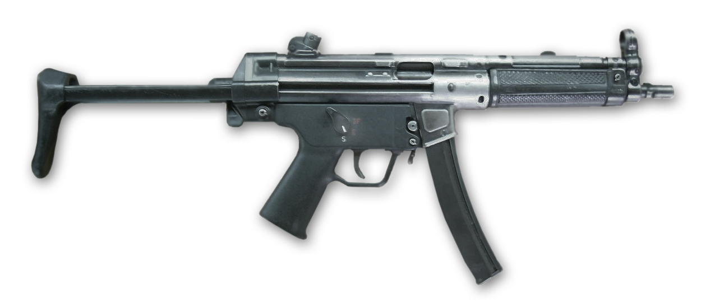
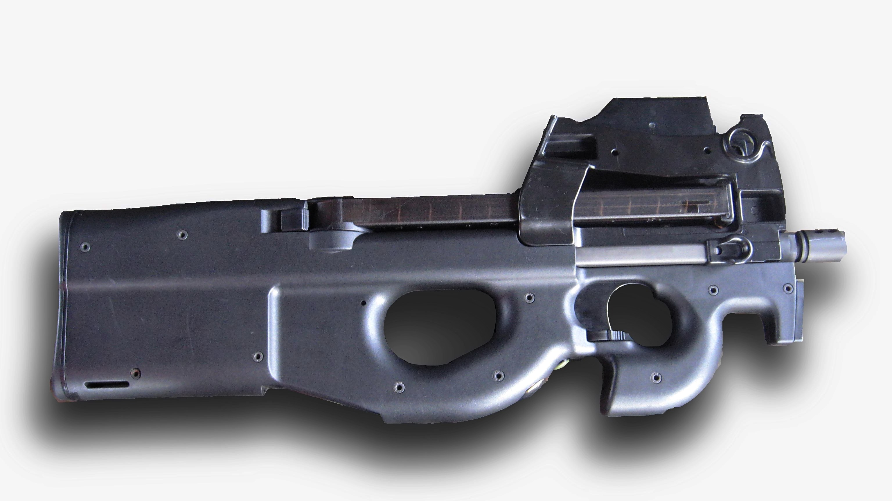
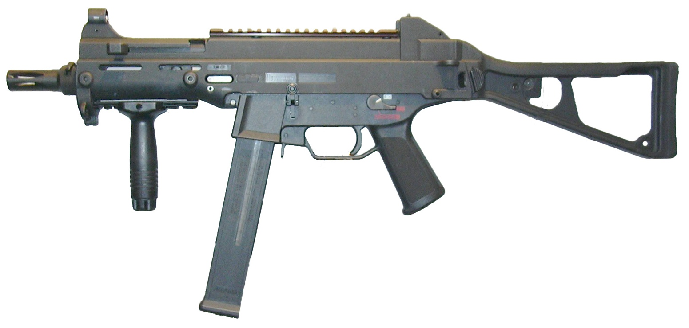
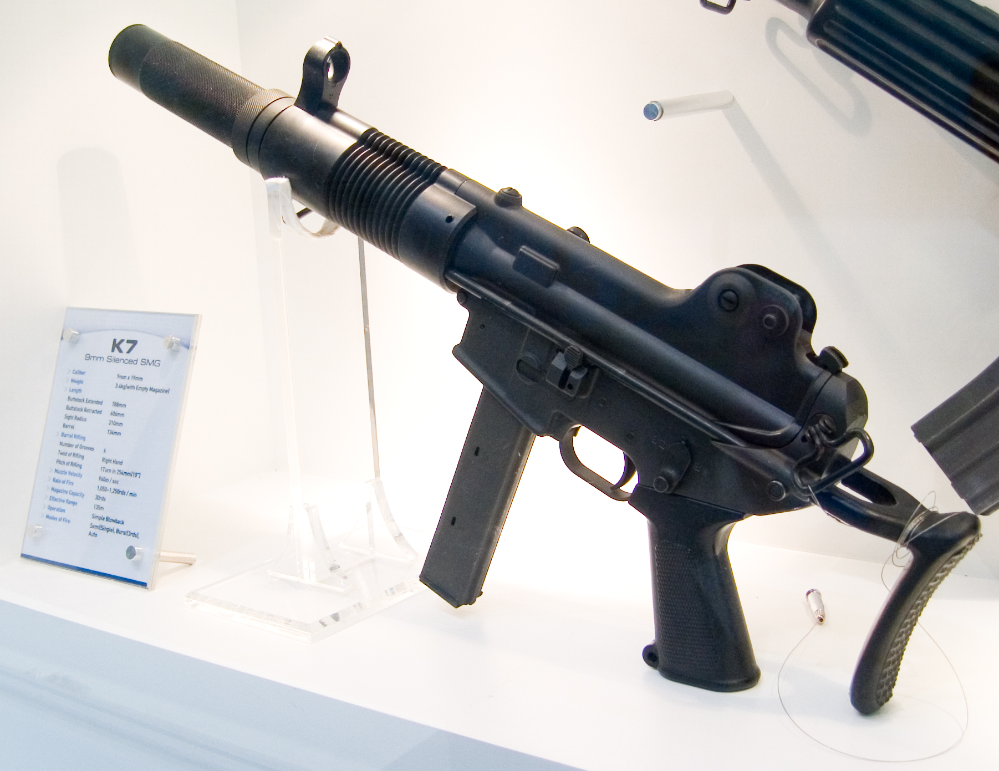

SMG
Role: High-Mobility Close-Quarters Rusher
Submachine guns trade range and raw damage for speed. They are cheap, they barely slow you down when you sprint, and they shred anything that gets close. The SMG is the entry-fragger's best friend: swing a corner fast, put the first bullets on target, and be gone before the enemy's slower rifle can answer.
Arsenal Comparison
| Weapon | Damage | Fire Rate (RPM) | Magazine | Reload (s) | Range (m) | Recoil (1–10) | Price ($) |
|---|---|---|---|---|---|---|---|
| MP5 “Hush” | 28 | 800 | 30 | 2.2 | 28 | 3 | 1500 |
| P90 “Coilgun” | 24 | 900 | 50 | 3.0 | 26 | 4 | 1700 |
| UMP-45 “Bruiser” | 35 | 600 | 25 | 2.5 | 32 | 5 | 1400 |
| K10 “Buzzsaw” | 22 | 1100 | 24 | 2.0 | 20 | 6 | 1250 |
Weapon Files
MP5 “Hush”

Combat Stats
- Fire Mode: Full-automatic
- Ammo Type: 9mm
- Wall Penetration: Low
- Mobility: 95%
Description / Lore
The gold standard by which every other submachine gun is measured. The Hush is quiet, controllable, and endlessly forgiving — a tight recoil pattern that lets even a shaky hand walk rounds onto a target at a full sprint.
Unlock Requirement
Available by default — Variant “Silent Partner” unlocks at 300 SMG kills.
P90 “Coilgun”

Combat Stats
- Fire Mode: Full-automatic
- Ammo Type: 5.7mm
- Wall Penetration: Medium
- Mobility: 94%
Description / Lore
Fifty rounds in a top-mounted magazine mean the Coilgun almost never runs dry mid-fight. Built for run-and-gun chaos: hose down a doorway, push through the smoke, and reload only when the room is already yours.
Unlock Requirement
Reach Account Level 8 — Variant “Circuit” at 50 spray-down multikills.
UMP-45 “Bruiser”

Combat Stats
- Fire Mode: Full-automatic
- Ammo Type: .45 ACP
- Wall Penetration: Medium
- Mobility: 96%
Description / Lore
The heavyweight of the rack. It fires slower than its siblings but every round lands like a hammer, stretching the SMG's usual range into rifle territory. When you want a submachine gun that still bites past thirty metres, grab the Bruiser.
Unlock Requirement
Win 15 close-quarters duels — Variant “Knuckle” at Level 20.
K10 “Buzzsaw”

Combat Stats
- Fire Mode: Full-automatic
- Ammo Type: 9mm
- Wall Penetration: Low
- Mobility: 97%
Description / Lore
An absurd 1100-RPM fire rate turns the Buzzsaw's slim 24-round magazine into a one-second scream of lead. Point-blank it deletes targets instantly — but whiff the opener and you are already staring at an empty mag.
Unlock Requirement
Purchase from the buy station — “Redline Teeth” skin at 200 kills.
Signature Showcase — MP5 Hush
Field footage: the roller-delayed action of the MP5 broken down in 3D.
External Intel
- Reference: Submachine gun (Wikipedia)
- Showcase video: How an MP5 works (YouTube)